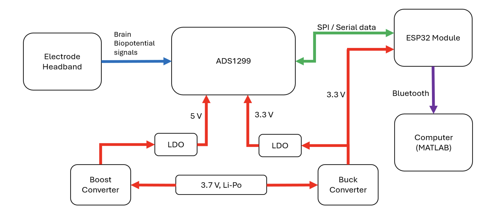
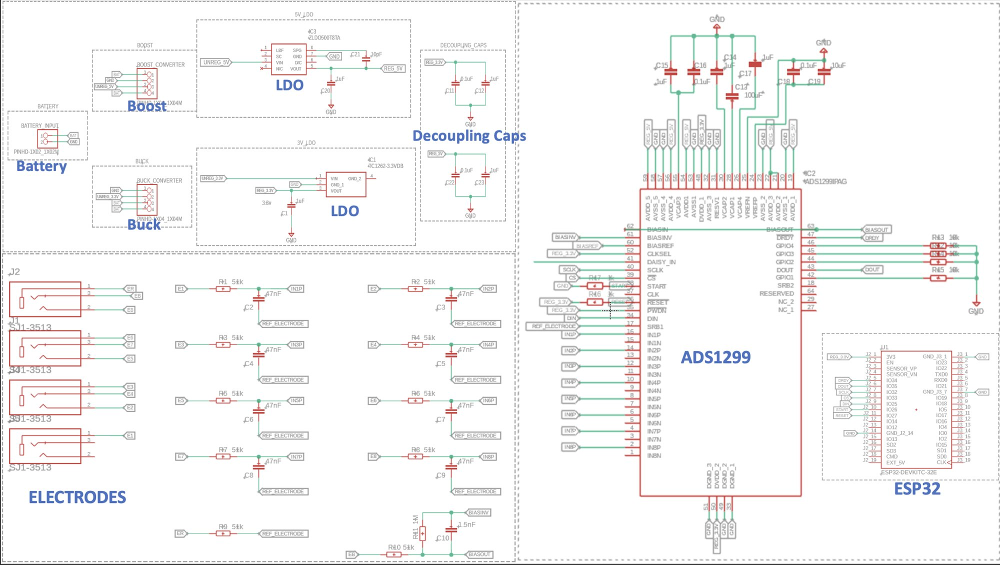
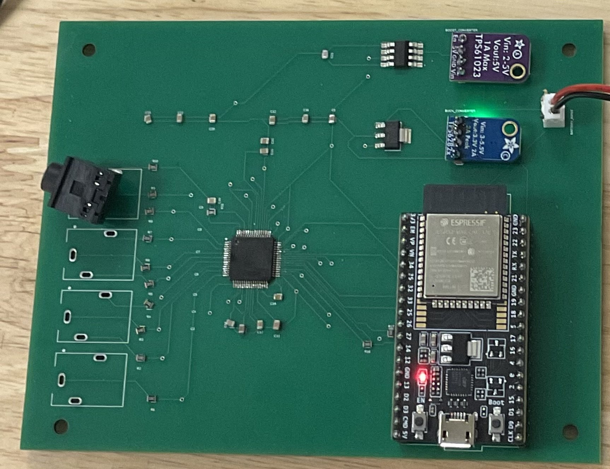
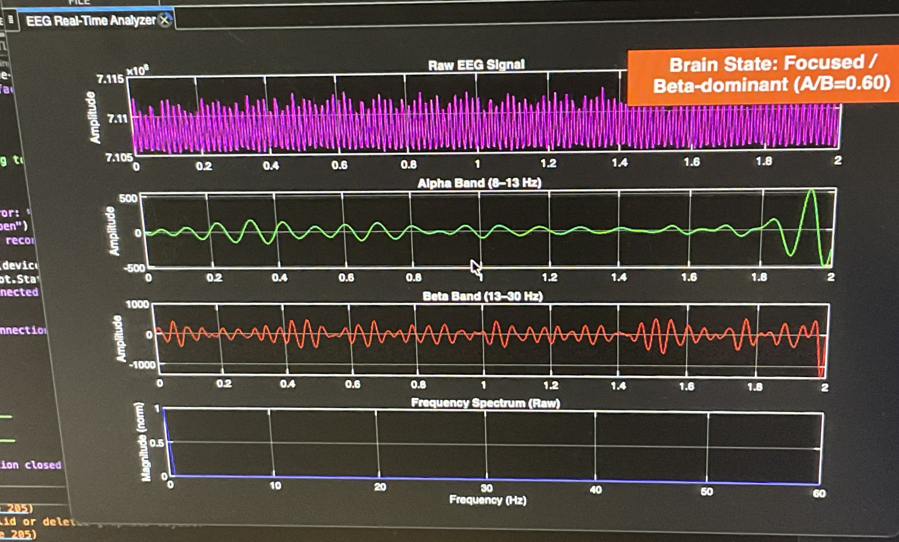
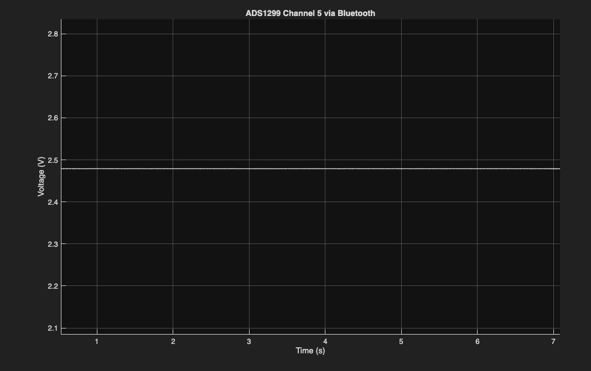
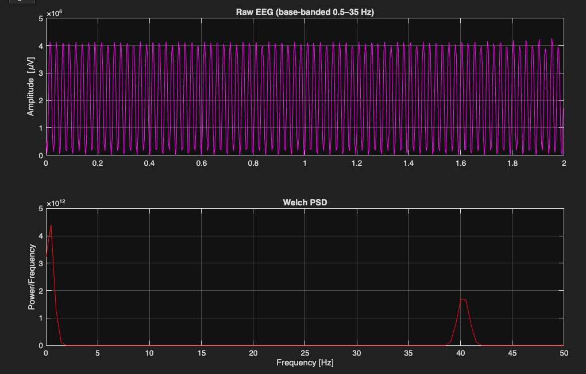
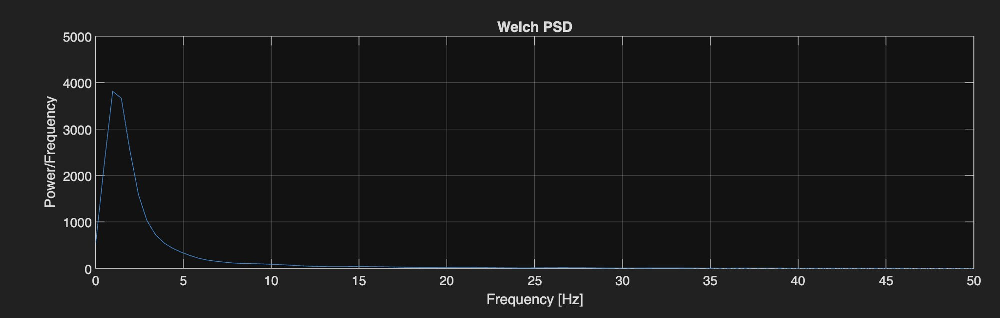
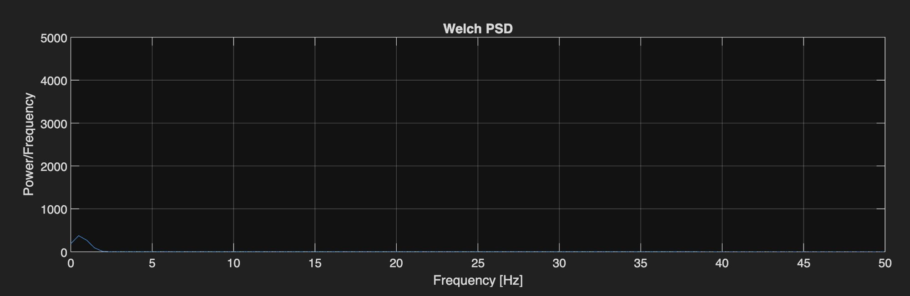
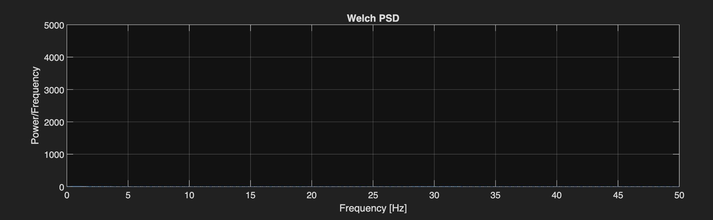

- 4 / 5Design objectives fully met
- ~10×Drop in low-frequency noise peak with bias drive on
- 66 HzAnti-alias cutoff on every input
- 5.00 / 3.31 VMeasured analog / digital supply rails
- 40+ADS1299 registers configured in firmware
- 27%Under budget: $82 left unspent
Overview
We set out to build a low-cost EEG headband that could turn brain activity into control signals for simple games. The finished system takes signals from electrodes on the forehead and mastoid, digitizes them on a custom ADS1299 board, streams them over Bluetooth from an ESP32, and analyzes them live in MATLAB. Four of our five objectives were met. The fifth, a front end quiet enough to pull reliable control features from live EEG, was not. The rest of this page shows how we tracked that problem down.
My role
- Team lead. I ran meetings across four subsystems (headband and enclosure, circuit and PCB, firmware, software), owned the schedule and Gantt chart, managed the $300 budget, and placed every purchase order.
- Firmware. I wrote the ESP32 firmware that brings up the ADS1299 over SPI, configures its registers, handles data-ready timing, and streams samples over Bluetooth to MATLAB.
- Neuroscience research. I made sure the design followed EEG fundamentals: which frequency bands carry which brain states, where electrodes go in the international 10–20 system, and what the relevant biomedical standards require.
System architecture
A 3.7 V Li-Po battery feeds two conversion paths. A boost converter and LDO produce a quiet 5 V rail for the ADS1299's analog side, and a buck converter and LDO produce 3.3 V for its digital side and the ESP32. Electrode signals enter the ADS1299, which amplifies and digitizes them at 24-bit resolution. The ESP32 reads each sample over SPI and forwards it over Bluetooth.


Key design decisions
| Decision | Alternatives weighed | Chosen · why |
|---|---|---|
| Analog front end | Discrete INA128 / AD8237 amps + ADS1256 ADC; ADAS1000 (ECG-focused); ADS131E08 / ADS1278 (no built-in amplifiers) | ADS1299: a low-noise programmable-gain amplifier on every channel, built-in bias drive, and gain and sample rate set in software. It replaces a per-channel amplifier and filter chain with one chip. |
| Controller | Raspberry Pi 4B | ESP32-WROOM-32: hardware SPI plus Bluetooth. Streaming needs only a few MB of flash, and it cost about $30 less. |
| Supply mode | Bipolar ±2.5 V | Unipolar 5 V analog / 3.3 V digital: fewer rails and a simpler layout, with the full EEG input range kept. |
| Regulators | AMS1117 / LM1117 (~1.1 V dropout, higher quiescent current) | TC1262-3.3 (200 mV dropout at 300 mA, 80 µA quiescent, 64 dB ripple rejection below 1 kHz) and ZLDO500 (30 mV dropout at 100 mA) to clean up switching ripple. |
| Converters | MP1584 buck / MT3608 boost modules | Adafruit 4920 buck / 4654 boost: documented ripple and built-in protection. |
| Electrodes | All wet Ag/AgCl | Dry gold-plated at the forehead recording (FP1) and bias (FPz) sites, which are reusable and need no gel. Wet Ag/AgCl at the mastoid reference, because a reference needs low impedance to hold the baseline steady. |
| Power source | Wall adapter | Battery only: no path from mains power to the wearer, so no isolation circuitry is needed. |
| Game link | Bluetooth | TCP (MATLAB → Processing): Bluetooth was already in use for the headset link, and TCP is low-latency between programs on the same computer. |
Analog front end
Each electrode passes through a first-order RC low-pass filter before reaching the ADS1299. It removes high-frequency content that would otherwise alias into the sampled data, and the series resistor limits current spikes into the chip:
fc = 1 / (2π · 51 kΩ · 47 nF) ≈ 66 Hz
That passes the full EEG range (delta through beta, 0.5–30 Hz) and matches the values on TI's own ADS1299 evaluation board. The board uses a referential montage: every channel is measured against one shared reference electrode, which needs fewer electrodes than a separate pair per channel. A driven bias electrode, wired to TI's recommended circuit, senses the voltage common to all inputs and feeds back its inverse to cancel shared interference such as 60 Hz mains hum. All eight input channels are routed, even though the headband uses three electrodes, so the board can grow to the chip's full capacity.


PCB layout
The two-layer board follows TI's reference layout. Electrode inputs run down the left edge, well away from the ESP32's digital activity on the right. The power circuitry sits along the top, with the 5 V analog rail entering the ADS1299 from above and the 3.3 V digital rail from below, so the two domains stay physically separate. Decoupling capacitors sit right at the chip's supply pins, and the board follows standard manufacturing rules (for example, no 90° trace corners).


Real-time software
MATLAB receives the Bluetooth stream and uses Butterworth filters to split the signal into its brain-wave bands: delta (blinks), alpha (8–13 Hz, relaxed) and beta (13–30 Hz, focused). It computes a phase-locking value for each band with a Hilbert transform, then labels the current brain state from the alpha-to-beta ratio. Those values go over TCP to three games built in Processing: the Chrome dinosaur game and Flappy Bird respond to alpha/beta shifts, and Frogger responds to blinks.


Verification results
We validated each subsystem separately, from the SPI link up to a person wearing the headset, so a failure at one level couldn't hide behind another.
| Test | Method | Result | Status |
|---|---|---|---|
| SPI link | Read the chip's fixed ID registers, then write values and read them back | Every register returned its expected value | Pass |
| Digitization (internal source) | ADS1299 built-in square-wave test signal at 0.95 Hz and 1.95 Hz | Clean square waves, with the spectral peak at the test frequency | Pass |
| Digitization (external source) | Signal generator: square, sine and sawtooth waves at 50 mVpp (1.9, 25 and 40 Hz), cross-checked on an oscilloscope | Waveforms reproduced, with the peak at the injected frequency. Low-frequency noise also visible. | Pass |
| Supply rails | Meter on each regulator output | 5.00 V analog, 3.31 V digital | Pass |
| Analog supply, from the chip's view | Routed the ADS1299's internal mid-supply voltage (MVDD) to an input channel | Stable ≈2.5 V, as expected | Pass |
| Bias drive | Electrodes in conductive gel, spectrum with bias off vs. on | Low-frequency peak ≈3,800 → ≈370 after 30 s (~10×), and flat at 60 s | Pass |
| Brain-state label (bench) | Signal generator tones inside the alpha and beta bands | Correct dominant band reported | Pass |
| Brain-state label (human) | Eyes closed and relaxed vs. eyes open and focused, 8–45 Hz band-pass | Score moved the right way (lower when relaxed, higher when focused) but wasn't reproducible enough to control a game | Partial |




Root cause: the low-frequency noise
Signal-generator tests showed a slow drift under 3 Hz that the chip's internal test signal did not. That points to something between the electrodes and the chip rather than the chip itself. We tested four suspects one at a time:
| Suspect | How we tested it | Verdict |
|---|---|---|
| Power supply | Rail measurements, plus the mid-supply readback through the chip | Ruled out |
| Software lag | Removed the live spectrum plot, streamlined the code, moved to a faster computer | Ruled out |
| Bias circuit | Electrodes in gel, bias off vs. on (below) | Works, but not enough |
| Signal path | Found that breadboard jumper wires, the lab's bench power supply, and three electrodes sharing one 3.5 mm jack (where cable movement shows up as drift) were all coupling noise in | Most likely cause |






The conclusion was that the circuit design was sound and the prototyping method was the problem. A breadboard can't hold microvolt-level signals steady. That's why the custom PCB mattered so much.
Other problems solved along the way
- Firmware lost at power-off. The Arduino IDE was loading the program into the ESP32's temporary memory instead of permanent flash. Switching the flash mode and enlarging the flash partition fixed it.
- Laggy live display. Drawing a live spectrum every frame stalled the display, so we kept only the raw signal and band plots and got updates back to real time.
- Headband comfort. Reaching the mastoid reference meant angling the band so it pressed on the ear, so we added a padding strip behind the ear.
Outcome & what I'd do differently
The system worked from headband to screen: the SPI link, digitization, power, bias drive and software were all verified. The gap was a front end quiet enough to extract control signals reliably, and the diagnosis above pins that on how we prototyped rather than on the design.
- Make an in-house PCB early. We spent weeks tuning the bias circuit on a breadboard. The fabricated board was ordered on Nov 19, arrived Nov 26, and was assembled Dec 1, two days before the final report, leaving almost no time to test on the finished board.
- Spend the budget on eliminating suspects. We left $82 unspent while not buying alternative electrodes and connectors that could have confirmed or ruled out the 3.5 mm jack.